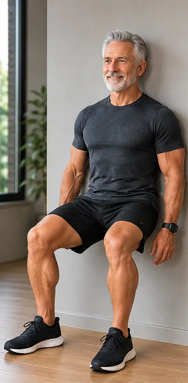
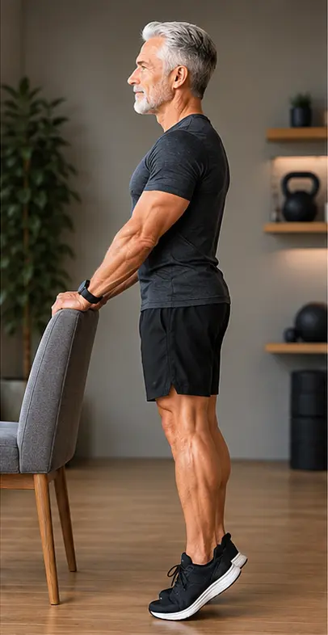
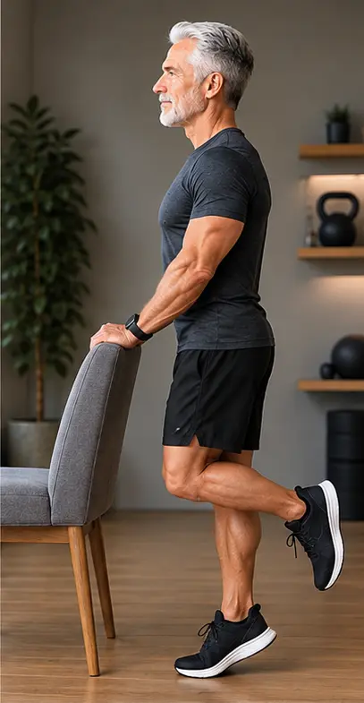
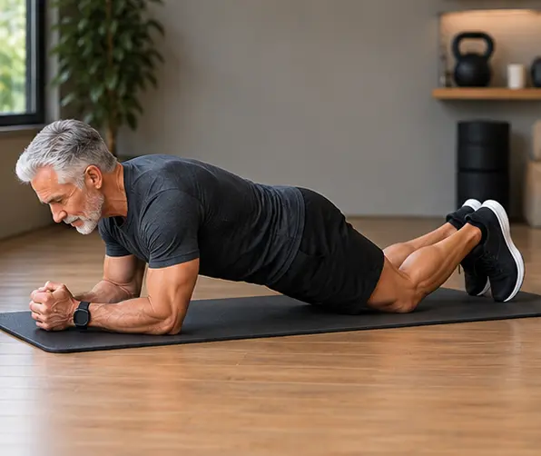
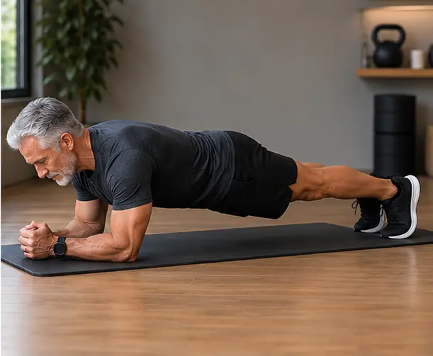

Testosterona depois dos 50: entendendo as mudanças no corpo do homem
Menos disposição, perda de força, queda da libido: será que é a testosterona? Depois dos 50, esses sinais são comuns, mas os sintomas sozinhos não respondem à pergunta. Entenda o que é normal no envelhecimento, como a deficiência de testosterona é investigada e o que você pode fazer hoje para manter força e autonomia.
Depois dos 50, é comum o homem perceber mudanças que antes não faziam parte da rotina: menos disposição, perda de força, aumento da barriga, redução da libido ou até mudanças na qualidade das ereções.
E aí aparece uma pergunta bastante comum: “Será que minha testosterona está baixa?”
A resposta pode ser sim — mas não é possível saber apenas pelos sintomas.
A testosterona tende a diminuir gradualmente com o passar dos anos, mas essa queda varia bastante entre os homens. Além disso, sono ruim, excesso de peso, algumas doenças, determinados medicamentos, alimentação inadequada e outros fatores também podem interferir nos níveis hormonais.
Envelhecer não significa automaticamente ter deficiência de testosterona. E também não significa que todo cansaço depois dos 50 deva ser colocado na conta da idade.
O que é a testosterona?
A testosterona é um hormônio produzido principalmente pelos testículos e participa de diversas funções do organismo masculino. Ela está relacionada, entre outras coisas, à:
- manutenção da massa e da força muscular;
- saúde dos ossos;
- produção de espermatozoides;
- desejo sexual;
- produção de glóbulos vermelhos;
- composição corporal;
- disposição e sensação geral de vitalidade.
Isso não significa que a testosterona seja um “combustível mágico” para o homem. Ela é apenas uma das peças de um sistema muito maior, que envolve sono, alimentação, atividade física, peso corporal, saúde metabólica, medicamentos, doenças e saúde emocional.
“Andropausa” existe?
O termo andropausa é muito conhecido e faz parte da linguagem popular. Ele costuma ser usado para descrever as mudanças hormonais que podem acontecer no homem à medida que envelhece.
Mas existe uma diferença importante: o homem não passa por uma queda hormonal abrupta equivalente à menopausa feminina. No homem, a redução da testosterona costuma ser gradual e bastante variável.
Por isso, em vez de pensar simplesmente em uma “andropausa”, a medicina procura descobrir se existe realmente uma deficiência de testosterona e, principalmente, qual pode ser a causa.
Você pode encontrar os dois termos — “andropausa” e “testosterona baixa” — em conversas e pesquisas na internet. Aqui na A Boa Idade, usamos o termo popular para facilitar a compreensão, mas sem transformar o envelhecimento normal em doença.
Quais sinais podem aparecer?
A deficiência de testosterona pode estar associada a sintomas como:
- redução do desejo sexual;
- mudanças na função erétil;
- cansaço persistente;
- menor disposição;
- redução da força e da massa muscular;
- dificuldade para manter desempenho físico;
- alterações de humor;
- redução da motivação;
- dificuldade de concentração;
- aumento de gordura corporal;
- perda de massa óssea em alguns casos.
Mas atenção: esses sintomas não significam, sozinhos, que a testosterona esteja baixa.
Cansaço, por exemplo, pode ter muitas outras causas. O mesmo vale para alterações do sono, libido, humor, peso e desempenho físico. É justamente por isso que uma avaliação adequada é mais importante do que tentar descobrir a resposta apenas pela internet.
Como saber se a testosterona está realmente baixa?
O caminho começa pela conversa com um profissional de saúde. Quando existe suspeita de deficiência hormonal, o médico pode solicitar uma dosagem de testosterona no sangue.
E aqui existe um detalhe importante que muita gente desconhece: um único exame baixo não costuma ser suficiente para confirmar o diagnóstico. A testosterona varia ao longo do dia e também pode sofrer influência de condições momentâneas, como doenças, alterações do sono e outros fatores.
As diretrizes da American Urological Association consideram razoável usar 300 ng/dL como um ponto de corte de apoio ao diagnóstico, mas a própria diretriz ressalta que o diagnóstico depende da combinação entre exames baixos e sintomas ou sinais compatíveis. Além disso, recomenda-se confirmar a alteração com duas dosagens de testosterona total, realizadas em manhãs diferentes.
Dependendo do caso, o médico pode solicitar outros exames para entender melhor a situação.
Não é o número sozinho que conta. É o número + os sintomas + a avaliação clínica.
E se o exame estiver baixo?
A primeira pergunta não deveria ser simplesmente: “Qual testosterona eu devo tomar?”
A pergunta mais importante é: “Por que minha testosterona está baixa?”
Isso porque existem diferentes situações capazes de reduzir os níveis hormonais. Entre elas podem estar:
- obesidade;
- distúrbios do sono;
- algumas doenças crônicas;
- determinados medicamentos;
- alterações na hipófise ou nos testículos;
- uso de anabolizantes;
- outras condições que precisam ser investigadas.
Em alguns homens, especialmente quando o excesso de peso está envolvido, a melhora da saúde metabólica e a perda de peso podem contribuir para a recuperação dos níveis de testosterona. Estudos de revisão e meta-análises mostram associação entre perda de peso e aumento da testosterona em homens com obesidade.
Isso não significa que emagrecer seja uma “cura garantida” para toda testosterona baixa. Significa que peso corporal e saúde metabólica fazem parte da história hormonal masculina e merecem atenção.
Exercício ajuda a testosterona?
Aqui vale separar duas coisas. Exercício é excelente para o homem depois dos 50. Ele ajuda a preservar força, massa muscular, capacidade funcional, equilíbrio e autonomia — benefícios que vão muito além da testosterona.
O que não devemos prometer é que determinado exercício, sozinho, vai manter a testosterona permanentemente elevada. Alguns exercícios podem provocar alterações hormonais temporárias após a atividade, mas estudos em homens mais velhos não sustentam a ideia simples de que musculação necessariamente aumenta a testosterona basal de forma significativa e duradoura.
Portanto, faça exercício por um motivo ainda melhor: para continuar capaz.
Três exercícios simples para começar
Os três exercícios abaixo não exigem equipamento e podem ser feitos em casa, com segurança, mesmo por quem nunca treinou antes.
Antes de começar: se sentir dor (diferente do desconforto leve de um músculo trabalhando), pare o movimento imediatamente. Se tiver alguma condição de saúde, lesão prévia ou dúvida sobre sua capacidade física, consulte um médico ou profissional de educação física antes de iniciar qualquer um destes exercícios.
1. Agachamento na parede

Encoste as costas na parede e deslize lentamente o corpo para baixo, como se fosse sentar em uma cadeira imaginária.
Não precisa começar descendo muito. Mantenha os pés firmes, joelhos alinhados e suba novamente com controle.
Sugestão inicial: 2 a 3 séries de 20 a 30 segundos, respeitando sua condição física. Se estiver difícil, reduza o tempo. Se estiver fácil, aumente gradualmente.
2. Elevação de panturrilha

Fique em pé próximo a uma parede ou cadeira para ter apoio.
Eleve os calcanhares lentamente, ficando na ponta dos pés. Depois, desça com controle.
Sugestão inicial: 2 a 3 séries de 8 a 12 repetições. Esse exercício parece simples, mas panturrilhas fortes ajudam em tarefas do cotidiano, caminhada e estabilidade.
Evolução: alternada. Quando o exercício com os dois pés já estiver confortável, faça o mesmo movimento alternando um pé de cada vez.

3. Prancha com apoio nos joelhos

Apoie os antebraços e os joelhos no chão. Mantenha o tronco alinhado e contraia suavemente o abdômen, sem prender a respiração.
Sugestão inicial: 2 a 3 séries de 15 a 30 segundos. Com o tempo e se houver segurança, o exercício pode ser progredido.
Evolução: prancha completa. Mesmo movimento, agora apoiando os pés em vez dos joelhos.

Mais importante que “aumentar testosterona”
Depois dos 50, preservar músculos e força é uma das melhores estratégias para preservar independência. Tudo isso depende muito mais de um corpo funcional do que de perseguir um determinado número no exame de sangue:
- levantar da cadeira;
- subir escadas;
- carregar uma sacola;
- caminhar;
- brincar com os netos;
- viajar;
- viver sozinho com segurança.
Sono também entra nessa conta
Dormir mal não é apenas uma questão de acordar cansado. O sono participa da regulação de diversos processos hormonais e metabólicos.
Ronco intenso, pausas na respiração durante o sono, sono fragmentado e sonolência excessiva durante o dia merecem atenção. Em alguns homens, distúrbios do sono podem fazer parte do problema que está por trás da queda da disposição e das alterações hormonais.
Por isso, antes de procurar uma “fórmula para aumentar testosterona”, vale olhar para algo bem menos glamouroso — mas muito importante: como você está dormindo?
E a reposição de testosterona?
A reposição hormonal existe e pode ser indicada para homens que realmente apresentam deficiência de testosterona confirmada e sintomas compatíveis. Mas ela não deve ser tratada como um suplemento comum.
Não é simplesmente: “Estou cansado, então vou tomar testosterona.” A terapia precisa ser individualizada, porque existem situações em que ela não é indicada ou exige cuidados especiais. Além disso, o tratamento precisa de acompanhamento médico.
A testosterona também pode interferir na produção de espermatozoides, o que é especialmente importante para homens que ainda desejam ter filhos.
Por isso, hormônio sem avaliação e acompanhamento não é uma boa ideia.
Quando procurar ajuda?
Converse com um médico se você perceber mudanças persistentes como:
- queda importante da libido;
- alterações persistentes da função sexual;
- perda significativa de força ou massa muscular;
- cansaço que não melhora;
- redução importante da disposição;
- alterações persistentes de humor;
- perda de desempenho físico sem explicação;
- outros sintomas que estejam prejudicando sua qualidade de vida.
Um urologista ou endocrinologista pode avaliar se existe realmente uma alteração hormonal e investigar possíveis causas.
Depois dos 50, o objetivo não é voltar aos 20
Talvez essa seja a parte mais importante. Envelhecer traz mudanças. Algumas são naturais. Outras podem indicar problemas que merecem investigação. O segredo está em não confundir uma coisa com a outra.
Não transforme todo envelhecimento em doença. Mas também não aceite tudo como “coisa da idade” quando existe uma mudança persistente que merece ser investigada.
Testosterona é importante. Mas força, sono, alimentação, peso saudável, movimento, saúde sexual, controle das doenças e qualidade de vida também fazem parte da saúde do homem.
Aos 50, 60, 70 ou mais, a pergunta não precisa ser: “Como faço para voltar a ser jovem?”
Pode ser muito melhor: “O que posso fazer hoje para continuar vivendo bem amanhã?”
Importante: este conteúdo é educativo e não substitui avaliação médica. Sintomas de cansaço, perda de libido, alterações sexuais ou mudanças de composição corporal podem ter diversas causas. A decisão sobre investigação hormonal e eventual tratamento deve ser feita individualmente com um profissional de saúde.
Fontes principais
- Endocrine Society — Statement on Testosterone Replacement Therapy, 2026.
- American Urological Association — Guideline: Evaluation and Management of Testosterone Deficiency.
- Endocrine Society — Hypogonadism in Men.
- Corona et al. — Body weight loss reverts obesity-associated hypogonadotropic hypogonadism: a systematic review and meta-analysis. European Journal of Endocrinology.
- Hayes & Elliott — Short-Term Exercise Training Inconsistently Influences Basal Testosterone in Older Men: A Systematic Review and Meta-Analysis. Frontiers in Physiology.
- Smith et al. — Examining the effects of calorie restriction on testosterone concentrations in men: a systematic review and meta-analysis. Nutrition Reviews.
- Samethadka Nayak et al. — The Effect of Weight Loss and Weight Loss Interventions on Sex Hormones: An Umbrella Review of Systematic Reviews and Meta-Analyses. Endocrine Practice, 2026.